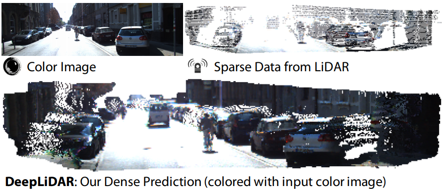

|
Jiaxiong Qiu Institute of Image Processing Master Student Email: qiujiaxiong727 AT gmail DOT com |
| Short Bio |
I am currently a master student supervised by Prof. Shuaicheng Liu at University of Electronic Science and Technology of China. I obtained my bachelor degree at Dalian Maritime University in 2017. My research interests include computer vision, computer graphics, robotics, and deep learning. |
| Publications: | |
| Preprints: | |
|
SlimConv: Reducing Channel Redundancy in Convolutional Neural Networks by Weights Flipping Jiaxiong Qiu, Cai Chen, Shuaicheng Liu, and Bing Zeng. arXiv:2003.07469 [Paper] |
|
|
DeepBlindness: Fast Blindness Map Estimation and Blindness Type Classification for Outdoor Scene from Single Color Image Jiaxiong Qiu*, Xinyuan Yu*, Guoqiang Yang and Shuaicheng Liu (*equal contribution) arXiv:1911.00652 [Paper] |
|
| Conference papers: | |
|  |
DeepLiDAR: Deep Surface Normal Guided Depth Prediction for Outdoor Scene from Sparse LiDAR Data and Single Color Image Jiaxiong Qiu*, Zhaopeng Cui*, Yinda Zhang*, Xingdi Zhang, Shuaicheng Liu, Bing Zeng, and Marc Pollefeys. (*equal contribution) Computer Vision and Pattern Recognition (CVPR 2019) [Paper] [Code] |
| Last Update: March, 2020. @2020. All Rights Reserved. | |